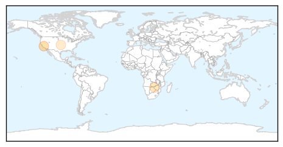

Measles
30-Day Web Trend
0 alerts, 0 warnings

30-Day Twitter Trend
0 alerts, 0 warnings

Article Locations
Article Confidences

Top Articles:
Top Tweets:
-
No tweets found for Oct 03, 2015
Ebola
30-Day Web Trend
0 alerts, 0 warnings

30-Day Twitter Trend
0 alerts, 0 warnings

Article Locations

Article Confidences

Top Articles:
Top Tweets:
- 0.936
- Sprinter loses family to Ebola, facing deportation back to Sierra Leone - USA TODAY http://t.co/5hLaTGOQzi ebola EVD
- 0.876
- Panhandle Science Cafe topic: Ebola care - Washington Times http://t.co/2HDwBdovq8 ebola EVD
- 0.814
- Sierra Leone: Frontline Nurses In Aftermath of Ebola Outbreak Battle ... - Huffington Post http://t.co/R46i5LJ4Pe
- 0.742
- My late fiancee's family adopted me after her death – Dennis Akagha, Ebola ... - Vanguard http://t.co/TYmAYARVQ6 ebola EVD
- 0.711
- Panhandle Science Cafe topic: Ebola care - Grand Island Independent http://t.co/6jJPEhR2SU ebola EVD
- 0.707
- Courage turned the tide of Ebola - The Sunshine Coast Daily http://t.co/XpWkLyu37r ebola EVD
- 0.684
- Ebola plans 'seriously flawed' - New Zealand Herald http://t.co/SLPQpafxTH ebola EVD